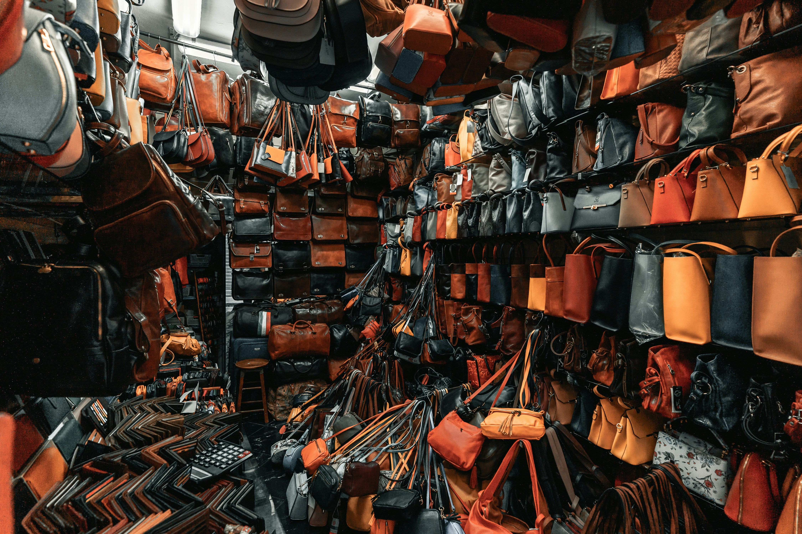
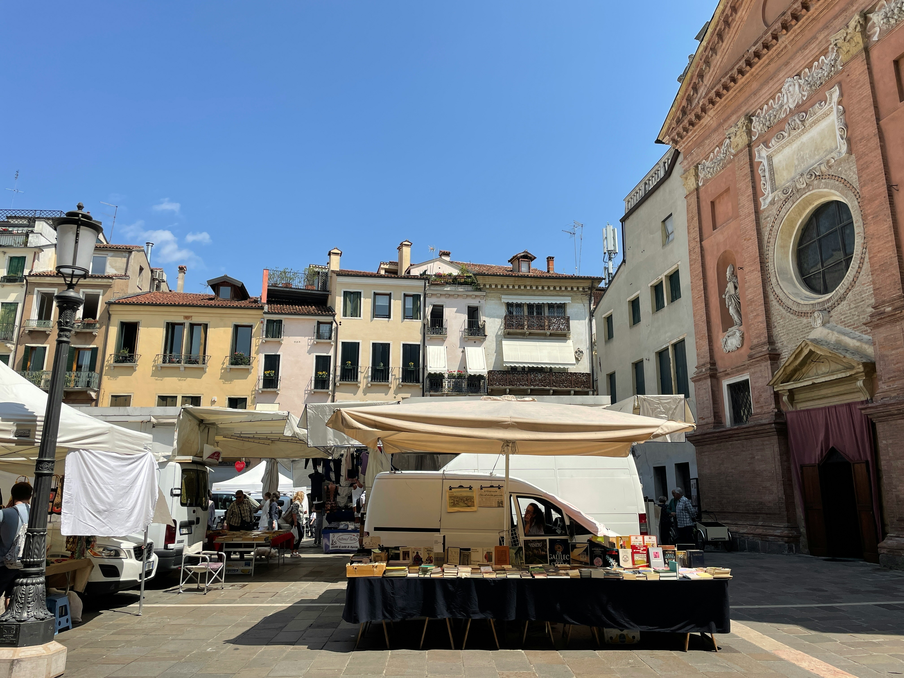

What is BeLocal?
BeLocal is a website that helps you discover authentic Italian shops, artisan markets, cafés, and vintage stores. Designed for travelers, eco-conscious consumers, and locals, the platform promotes sustainable shopping and supports small businesses that preserve cultural heritage. With BeLocal, finding unique, ethical, and community-driven experiences becomes simple, both whether you’re at home or exploring a new city.
BeLocal Highlights of the Week

Bottega Artigiana

Caffè del Centro
